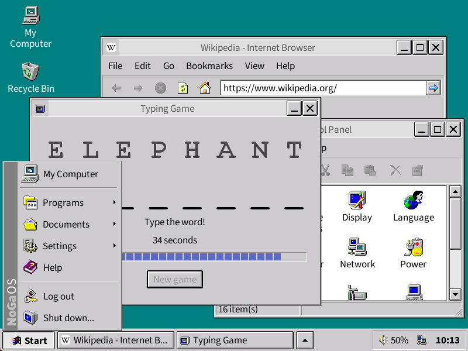

NoGa OS is a virtual operating system for kids: a complete desktop with its own windows, files and apps. It helps kids learn real computer basics in a controlled space: mouse, keyboard, windows, files, and simple educational/play apps. It is intentionally not a real operating system: the host does the low-level work, so all the effort goes into what a kid actually sees and touches. And it is a gateway rather than a destination: a kid outgrows it in a few years and moves on to Windows, macOS or Linux, so NoGa OS keeps to the habits those desktops share, made bigger, fewer and plainer, instead of inventing its own.
35 MB · released 2 October 2026 · needs Java 17+ Linux, Windows, macOS and Raspberry Pi

Running it
Install Java 17 or newer, then run the downloaded file:
java -jar nogaos-190.jar
The first start asks you to create an account. Video and audio playback need VLC installed on the computer; nothing else does.
A computer of their own
An old laptop or a Raspberry Pi can become a NoGa OS computer: it powers on straight into NoGa OS, with no login prompt and no Linux desktop reachable behind it. Install Debian (the small "netinst" image, with no desktop environment selected) or Raspberry Pi OS Lite, log in, and run:
It installs Java and everything else NoGa OS needs, downloads the latest version and sets the computer to start it on boot. It is a plain script you can read first, and running it again is safe.
Status
This is a personal project, written for my own children and shared in case it is useful to anyone else. It is early and it has rough edges. If you try it, bug reports and comments are welcome.
Changelog
Version 190 · 2 October 2026
Sessions with other computers no longer leave a copy of the chat and the drawing in the kid's files; copies saved before stay where they are
**Restart** after an update now brings NoGa OS back on its own on computers that start it as a service (the setup described in the help), instead of leaving the screen empty
Version 188 · 1 October 2026
**Display Properties**: the wallpaper list shows only the wallpapers that come with NoGa OS, and **Browse...** picks any picture of your own; the "Flying logo" and "Your name" screen savers are now one **Flying text** saver that shows whatever the kid types, or their name
Screenshots always go to the same **Screenshots** folder whatever the language, and pictures already saved under its Catalan name are moved there; in Catalan it is still shown as **Captures de pantalla**
Drop-down lists look cleaner, and file **Properties** show long names, places and dates in full, over more lines when needed
Version 186 · 30 September 2026
NoGaOS Cloud networks: a provider can group computers into networks such as "Home" or a school class, and each network appears in **My Computer** next to **Local Network**, showing who is logged in right now on its other computers. The privacy notice now covers being put in networks, so computers already connected to a provider ask for it to be accepted once more
Version 185 · 30 September 2026
New **Storage** applet in the Control Panel (the same page as the C: drive's **Properties**) showing how much space NoGa OS takes and how much can be freed, with **Disk Cleanup** to remove old temporary files and empty the Recycle Bin, and for administrators old logs and previous versions
Simpler **Updates**: it checks as soon as it opens and shows one message and one button for the next step, with the new version's notes; **Restart now** asks about unsaved work first, and old downloaded versions are removed automatically, keeping one to go back to
The web browser keeps at most 256 MB of pages and pictures on the disk, adjustable in **Internet Settings**
Version 184 · 30 September 2026
NoGaOS Cloud asks before it shares: when a computer joins a provider, it first shows in plain words what it will send and the provider's privacy notice, and joins only once a parent or the person responsible for the computer accepts it; each computer can be offered something different (a school computer can report in without backups), and if the provider's notice or offer changes, the computer waits for the new one to be accepted. The applet is now called **Cloud**
Text copied outside NoGa OS (a code copied in a browser, for example) can be pasted inside it, and text copied inside can be pasted outside; files, images and passwords stay inside
Version 181 · 30 September 2026
NoGaOS Cloud: enroll a computer with the family's provider (the project runs one at cloud.nogaos.org) and it reports in every 15 minutes, so a parent sees from anywhere, in the provider's web page, whether it is on, which version it runs and when it last backed up; switch on **Backup** in Control Panel → **NoGaOS Cloud** and every snapshot is copied there with its whole history, with a progress bar and **Cancel**, and each file can be browsed and downloaded from the web page; files over 25 MB (adjustable) are left out, and nothing already backed up is ever deleted
GitHub backups are gone: NoGa OS no longer pushes to GitHub repositories, and the saved token is removed from the computer — the repositories themselves keep their history. To keep backing up, enroll the computer with a NoGaOS Cloud provider and switch **Backup** on there; the **Backup** applet is now a tab of **NoGaOS Cloud**
The Performance Profiler moved into the System Monitor, as a tab for administrators